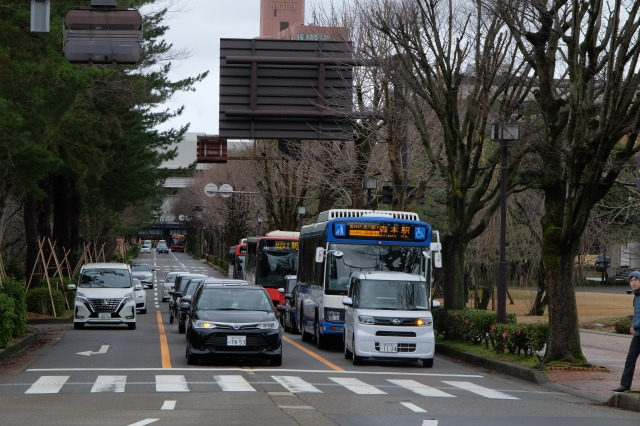
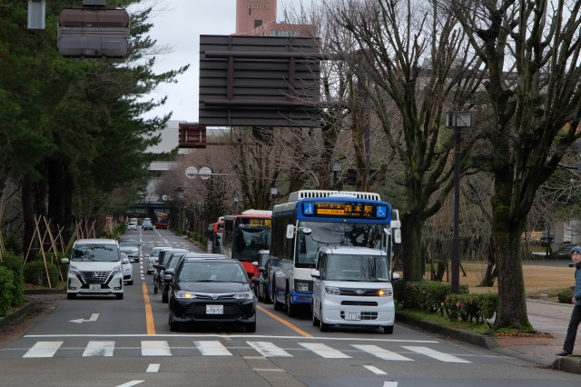
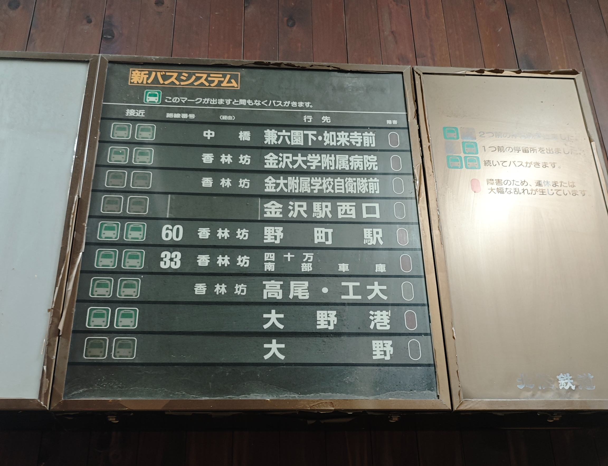
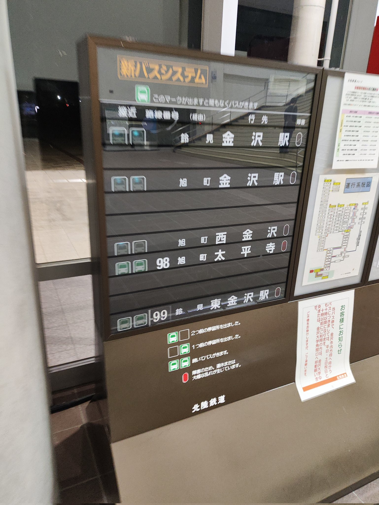

← 戻る
新バスシステムシミュレータ (広坂①タイプ)
実物の写真
広坂・21世紀美術館（しいのき迎賓館前）バス停に設置されている新バスシステム表示装置の実物写真です。これ自体はかなりありふれた筐体で、おそらく一番数が多いと思います。塗装の劣化具合や張り紙など個体差はいくらでも挙げられます。なぜか暗い時間の写真しか見つかりませんでした、、、おまけでバスが3台連続で兼六園下方向に出ていくところ。もちろんJRバスは映りません。
 

同型？
いくらでも見つかります。2024年2月には新バスシステムが更新される予定ですが、現在の経営状況でたくさんの表示器を更新できるのでしょうか。全数をスマートバス停にするとは考えにくいし、ひょっとしたら主要バス停以外は既存の表示器を使い続けるのかもしれません。

